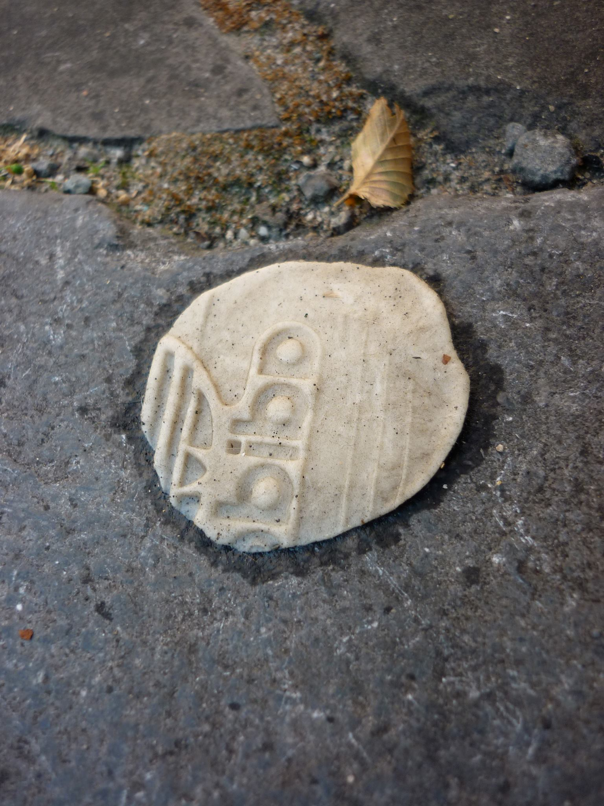

29 février - 27 mars 2020
CARTOGRAPHIE DE LA CHIQUE
Atelier d’écriture et de photographie animé par Claire Corniquet et Jonathan Ortegat

Cet atelier qui s’articulera sur 4 samedi et une soirée d’expo, prendra forme au départ d’une marche attentive dans le quartier des Marolles. Durant le parcours, munis d’un appareil photo, notre attention se focalisera sur la trace et la disparition: trace d’un moment passé, miette d’un passage, reste d’une rencontre. C’est à partir de ces objets, de ces images et des ressentis collectés que nous tricoterons nos histoires. Durant les ateliers d’écriture, les mots s’agripperont aux images, aux matières, aux sons, etc. Nous réfléchirons autour et à partir de la trace ainsi que de la disparition de celle ou celui qui en est à l’origine; nous défilerons ses coutures et la déplierons dans toutes ses dimensions. Enfin, ce travail mené collectivement, sera présenté lors d’une soirée d’exposition à Hectolitre.
Quand?
Ateliers: les samedi 29/02, 07/03, 14/03 et 21/03 de 10 h à 17 h
Exposition: le vendredi 27/03 de 18 à 22h
Où?
Hectolitre et Playful Studio
Rue de l’Hectolitre 3 - 1000 Bruxelles
Combien?
40€ pour le cycle d'ateliers incluant les frais d'impression et d'exposition (payable en une fois le 1er jour)
Le prix ne doit pas être un frein à la participation :)
Infos et inscriptions
claire.corniquet@gmail.com
jonathan.ortegat@gmail.com
-
Les animateurs :
Claire Corniquet
Née en 1982 à Roubaix, je vis à Bruxelles depuis une quinzaine d’années. Titulaire d’un doctorat en histoire de l’art sur les techniques céramiques du Niger, je m’intéresse aux objets, à leur trajectoire, à leurs usages et à l’affection qu’on leur porte. J’écris des nouvelles publiées dans des revues littéraires, je me suis formée à l’animation d’atelier d’écriture (Cesep; Changement pour l’égalité; PAC), et j’anime régulièrement des ateliers en anthropologie depuis 2016. En 2018, j’ai publié le bookleg « Cartographie de la chique » aux Editions MaelstrÖm, qui réunit dix courtes nouvelles écrites à partir d’objets et de traces glanés au cours de marches bruxelloises. L’idée originale de l’atelier proposé est tiré de ce projet entamé en 2010.
Jonathan Ortegat
Vidéaste/photographe d’architecture et de paysage, je suis né en 1984 à Bruxelles et j’y vis et travaille actuellement. Après 6 années passées en Argentine, je rentre en Belgique en 2014 fort d’une expérience intense vécue dans l’une des plus grandes mégalopoles du monde. Dès ma réinstallation au pays, la photographie devient mon moyen de reconnexion avec ma ville d’origine. Mes collaborations avec divers bureaux d’architecture et d’urbanisme bruxellois m’ouvrent à une lecture différente de l’image, celle qui révèle les couches qui, au fil du temps, ont dessiné le paysage. C’est alors que je passe énormément de temps en rue à affiner mon regard et à aller à la rencontre de l’autre, de celui qui habite les paysages que je photographie, de ceux qui y laissent leurs traces. Naturellement ma pratique passe d’un travail purement paysagiste à un travail humaniste qui en plus de donner la part belle au contexte laisse à voir l’utilisation qu’en font ses usagers, trouvant ainsi un équilibre entre la photographie d’architecture et la photo documentaire de rue.